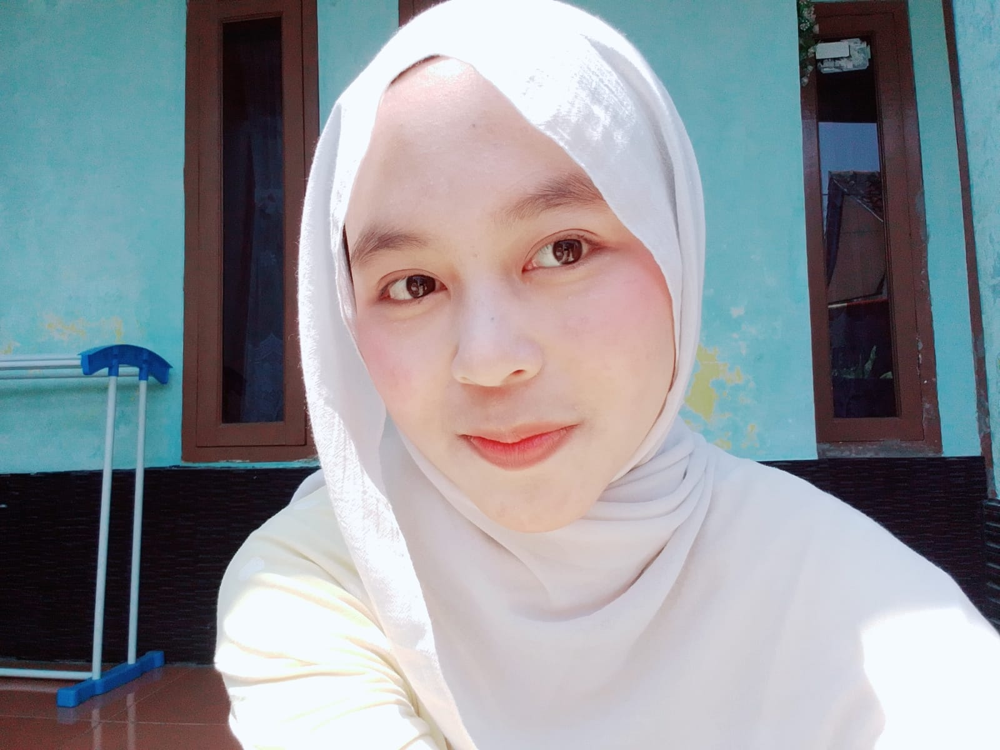

Halaman Profil Diri

Biodata
| Nama | Silvi Anggraeni |
|---|---|
| NIM | 1247050035 |
| Program Studi | Informatika |
| Fakultas | Sains dan Teknologi |
| Universitas | UIN Sunan Gunung Djati Bandung |
| Asal | Garut |
Tentang Saya
Saya adalah mahasiswa Program Studi Informatika di Fakultas Sains dan Teknologi, UIN Sunan Gunung Djati Bandung. Saya berasal dari Garut dan saat ini sedang menempuh perkuliahan sambil mengembangkan kemampuan di bidang pengembangan aplikasi web.
Mata Kuliah Semester Ini
| No | Mata Kuliah | SKS | Dosen Pengampu |
|---|---|---|---|
| 1 | Manajemen Basis Data | 3 | Wildan Budiawan Zulfikar, S.T., M.Kom. |
| 2 | Jaringan Komputer | 3 | Cecep Nurul Alam, M.T. |
| 3 | Pengembangan Aplikasi Mobile | 3 | H. Aldy Rialdy Atmadja, M.T. |
| 4 | Pengembangan Aplikasi Web | 3 | Muhammad Deden Firdaus, ST, M.Kom |
| 5 | Interaksi Manusia dan Komputer | 3 | Dr. Cepy Slamet S.T., M.Kom. |
| 6 | Intelegensia Buatan | 3 | Jumadi ST., M.Cs. |
| 7 | Manajemen Proyek Perangkat Lunak | 3 | Agung Wahana S.E., M.T. |
| 8 | Kewirausahaan & Etika Bisnis | 2 | Adam Faroqi ST., MT. |
| Jumlah SKS | 23 |
Pengumpulan Tugas Kuliah
Klik Tambah Tugas untuk mencatat tugas beserta file-nya. Data tersimpan di browser perangkat ini.
- 0 Total tugas
- 0 Sudah dikerjakan
- 0 Sedang diproses
- 0 Belum dikerjakan
Kontak & Tautan
Anda dapat menghubungi saya atau melihat profil kampus saya lebih lanjut melalui tautan berikut: